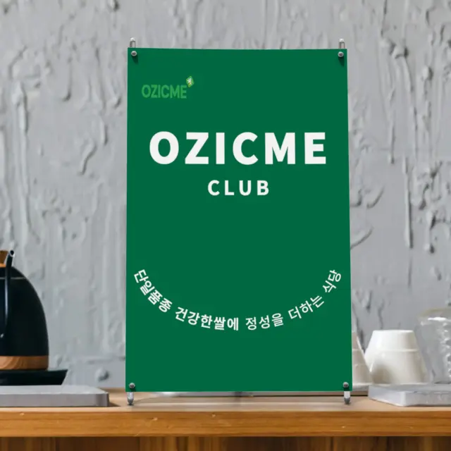
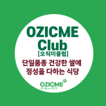

[ 오직미클럽 ]
좋은 쌀로 정성을 다하는 식당!
'오직미클럽'으로 한곳에 모았어요.
식당의 출발은 맛있는 밥입니다!
우리 동네의 '오직미클럽'이 어디인지?
좋은 쌀 쓰는 식당 검색해보세요!


좋은 쌀로 밥하는 식당의 표시입니다
매장에서 이 초록 표시를 확인하세요
초록색 소배너와 원형 스티커가 좋은 쌀로 정성을 다하는 오직미클럽 식당을 알려드립니다.